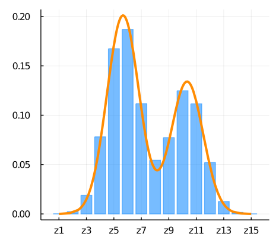
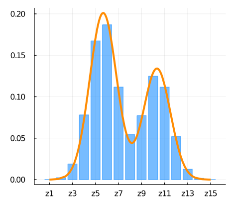

I'm Markus.
About
I am an Austrian student and Math/Stats enthusiast.
I have a Mathematics background and in 2022 I obtained my Master's Degree in Data Science at the Vienna University of Technology with distinction.
In 2023, I am going to start my PhD on probabilistic programming.
Master's Thesis
The goal of my Master's thesis was to build a Machine Learning model for the prediction of performance regressions in software projects. Using the openly available data of Mozilla's Firefox project, a novel labeling approach was found to intercept potential faulty commits before the would go to production.
Bachelor's Thesis
My Bachelor's thesis is about a particular approach to reinforcement learning, where the return is modelled directly by categorical distributions rather than only its expected value. I derived the sample complexity of tabular algorithms and considered the incorporation of risk measures in the action selection process. Results published in SIMODS.
 

Blog
I started a blog about topics I find interesting. This can be fancy algorithms, beautiful mathematical results, etc. There you may find explanations and background information about some of my projects.
Projects
Predicting Chemical Properties with 3D Convolutional Neural Network
Describe a crystal molecule through Fourier transform in reciprocal space and predict enthalpy per atom.


Super Human Humor with GPT2
Scraped r/jokes and fine-tuned pretrained GPT2 on it. The results are hilarious.
I just saw a guy being chased by a lion, he got out of his car, took out a hunting rifle and yelled "Quick, grab that damn animal and drive!" I thought to myself, "Man, that's gonna give me a headache"
Chess Engine
Programming a fast chess simulator and using MTD(f) as search algorithm.
Final engine includes a small opening book and self generated 3-men endgame tablebase.
It is on par with chess.com engines up to level 20 which they consider to be advanced to expert level strength.
Game as white vs chess.com computer level 16.
MNIST from Scratch
Implementation of automatic differentiation library and testing with deep neural network on MNIST dataset in JULIA.
CartPole with RL
Reinforcement Learning in continuous state space. The task was to swingup and balance a pendulum by only applying a horizontal force to the cart. The states were approximated by a neural net.

Goomo
The Goomo robot was product of a student project during my internship at iteratec. A Segway vehicle with Android smartphone on top allowed us to creatively try to write autonomous driving software.
Finite Field Generator
Ridiculously slow calculation of addition and multiplication table of any finite field
based on modular integer polynomial arithmetic.
Produces fancy pictures.
Dwelled in iOS Development
I really got into programming when I started playing around with Swift and building apps for the iPhone.
My best efforts were a messenger with GPS capabilities and an app which collects statistics like acceleration
and velocity of the phone.


Personal Website
I created a website to show off my stuff.
Contact
You can find some of the above projects on my GitHub and you can send me a message per e-mail.